47 channel selection designs47 variantov výberu kanálov
Discover the original FullHDGlass channel selection designs. Select a preview to enlarge the original channel-selection panel. Use arrows to browse.Objavte originálne varianty výberu kanálov FullHDGlass. Kliknutím na náhľad zväčšíte samotné zobrazenie výberu kanálov. Medzi snímkami sa pohybujte šípkami.

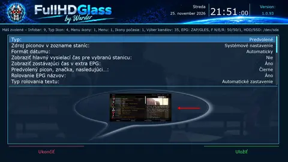

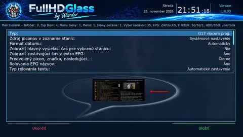


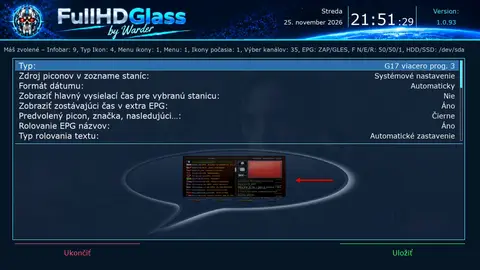

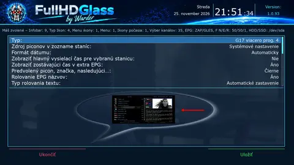


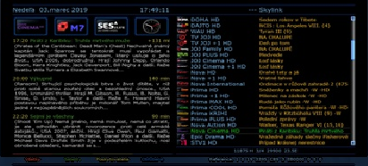

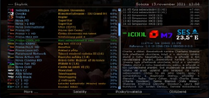

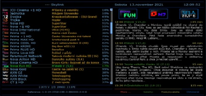

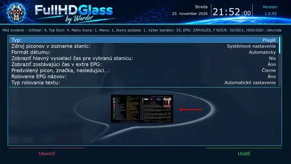

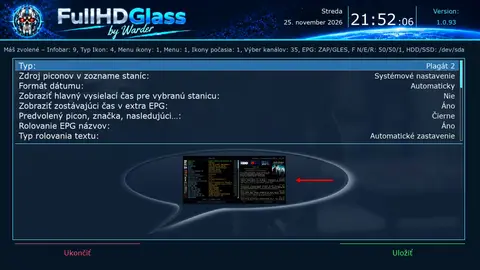

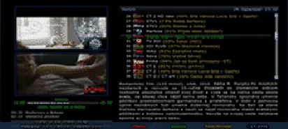

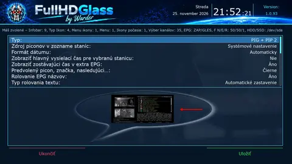


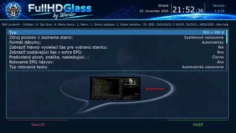

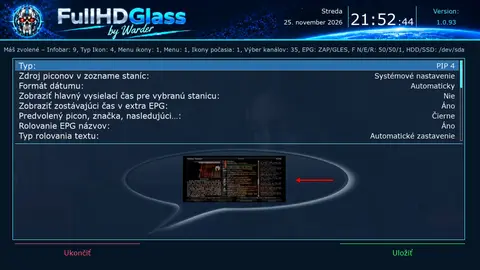

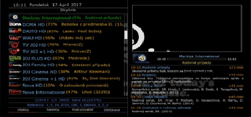

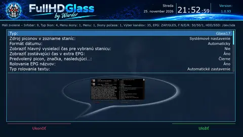

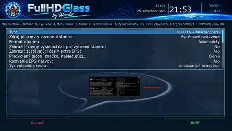

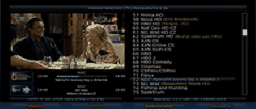

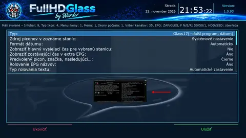


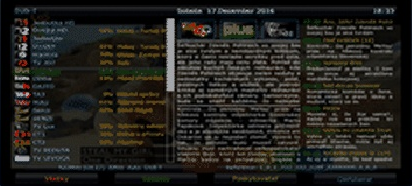

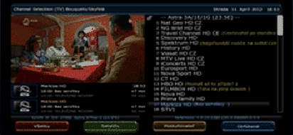

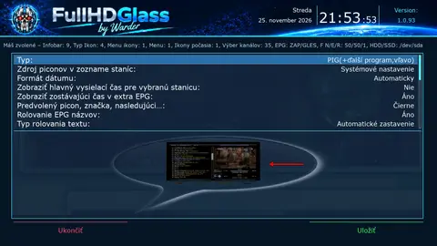

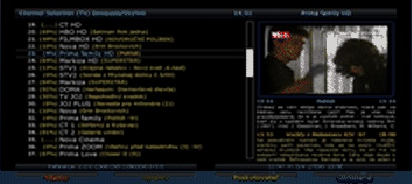


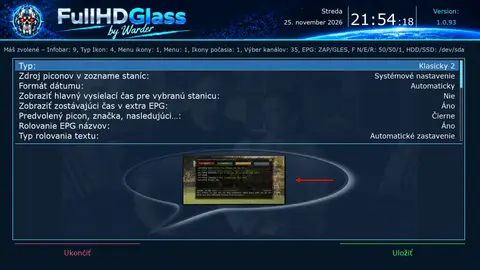

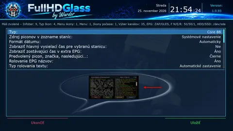

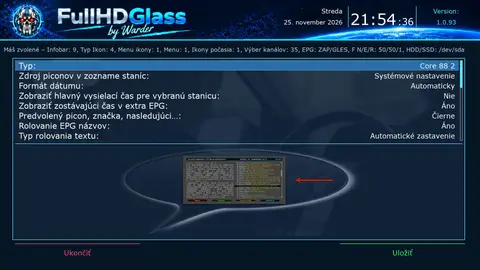

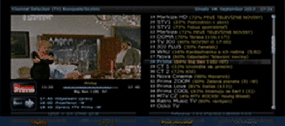

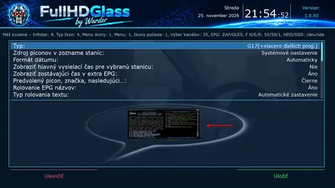

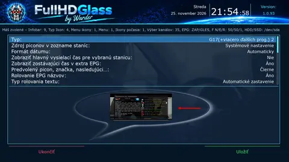

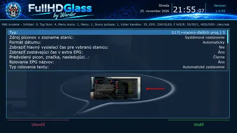

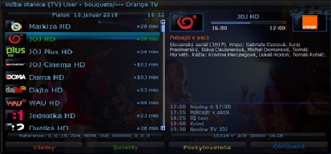

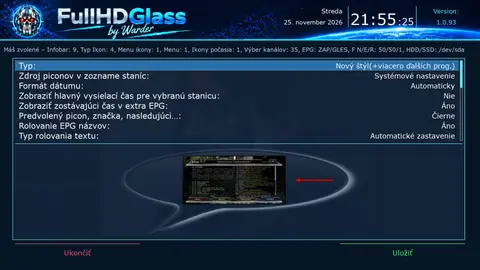

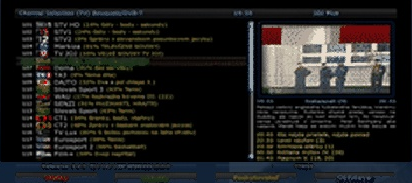

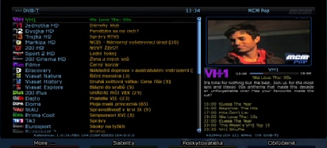

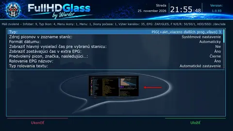

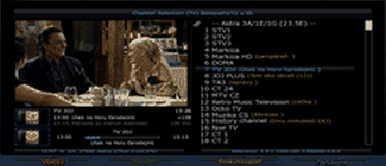

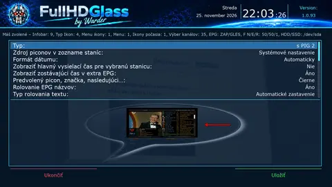

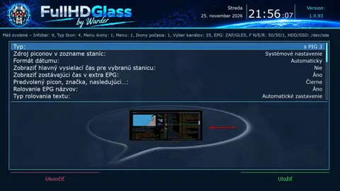

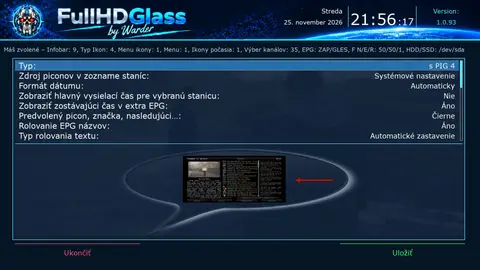

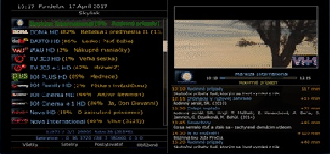


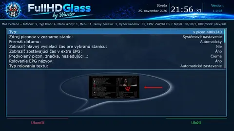

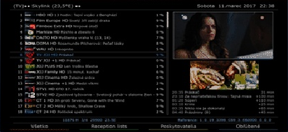